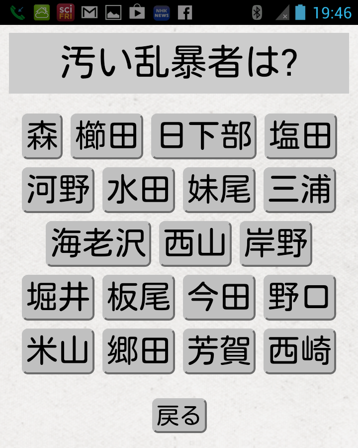
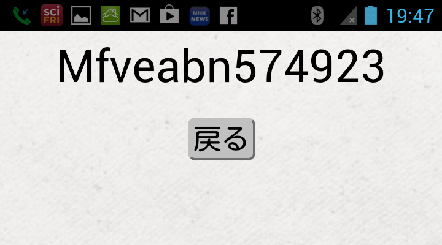

<html>
  <head>
    <meta http-equiv="Content-Type" content="text/html; charset=utf-8">
    <title>コロンブス日和 - EpisoPass</title>
    <style type="text/css">
      body {
        background-color:#ffffff;
        font-size:12;
        font-family: "Hiragino Kaku Gothic ProN","メイリオ", "sans-serif";
      }
      a { text-decoration: none; }
      li.bold { font-weight: bold; }
      div.body { width:340pt; }
      div.left { float:left; width:10%; font-weight:bold;}
      div.right { width:50%;}
      h1 { background-color:#4d4; padding:8pt;}
    </style>
  </head>

  <body>
    <div class='body'>
      <h1>コロンブス日和 - EpisoPass</h1>
      
      様々なWebサービスでユーザ認証のためにパスワードが使われています。            
      
      パスワードはいろいろ問題が多いシステムであり、
      パスワードにかわる様々な認証システムが提案されてはいるものの、
      すべての点でパスワード認証より優れたシステムは存在しないと言われているので、
      パスワードによる認証が他の方法で置き換えられる時代はすぐには来ないでしょう。
      
      <p/>
      パスワードの最も嫌なところは
      <b>覚えておくのがとても大変</b>なことだと思います。
      パスワードを忘れて困った経験がない人はいないでしょう。
      いろんなサービスで同じパスワードを使い回すのは危険ですし、
      パスワードは時々変更した方が安全だと言われていますが、
      複雑で長いパスワードを沢山覚えておくことは不可能ですから
      仕方なく同じパスワードを使い回している人は多いと思います。
      
      <p/>
      MicrosoftのFlorêncio氏による2007年の大規模な調査によれば、
      ユーザは平均25個のサイトで6.5個のパスワードを利用しており、
      3ヶ月間にユーザの4.28%がパスワードを忘れてしまっていたということです。
      また2011年の野村総研の調査によれば、
      一般的なユーザがパスワード認証を行なうサイトは平均19.4個で、
      利用しているパスワードは平均3.1個だったそうです。
      多くのパスワードを記憶することが困難であるため、
      多くのユーザが同じパスワードを複数サイトで使い回しているのでしょう。
      
      <p/>
      異なるパスワードをすべて記憶することが不可能なのであれば
      紙やファイルに書いておけば良いかもしれませんが、
      パスワード文字列をそのまま記録するのは危険なので、
      複数のパスワードを暗号化して覚えておくための
      様々な<b>パスワード管理システム</b>が利用されています。
      大抵のパスワード管理システムは
      ひとつの「マスターパスワード」を利用して他のすべてのパスワードを管理するように
      なっていますが、
      マスターパスワードは覚えておかなければなりませんし、
      パスワード管理システムはどこでも使えるとは限りません。
      できれば特殊なシステムを使うことなく
      複雑な多数のパスワードを利用できる方が嬉しいでしょう。
      
      <p/>
      そもそも
      強力なパスワードを作成してからそれを覚えたり管理したりするという
      やり方が間違っているのではないでしょうか。
      新しく作ったパスワードを覚えたり管理したりするのではなく、
      すでに知っていて忘れようがないような秘密の記憶をもとにして
      複雑なパスワードを生成して使うことにすれば
      パスワードを覚えられない問題は解決するはずです。
      
      <h2>EpisoPass</h2>
      
      子供のころちょっと怪我をしたとか、
      イジメられた嫌な経験とか、
      うっかりした失敗を隠していたとか、
      他人に話したことはないけれども忘れることがないような
      秘密の記憶というものが誰にも沢山あると思います。
      
      強い体験にもとづく記憶は
      <b>エピソード記憶</b>
      と呼ばれ、時間がたっても消えることがありません。
      一方、数式や電話番号を記憶しようとしてもなかなか覚えられませんし、
      覚えていたつもりでも時間がたつと綺麗に忘れてしまっていたりするものです。
      このようなものは
      <b>意味記憶</b>
      と呼ばれ、エピソード記憶に比べると長期的な記憶が困難です。
      パスワードもこちらの範疇に属するので
      覚えるのが大変だし簡単に忘れてしまうというわけです。
      
      <p/>
      パスワードがエピソード記憶だったら良いのですが、
      体験的にパスワードを覚えるのは無理でしょう。
      であれば逆に、
      忘れることがない秘密のエピソード記憶をもとにして
      パスワードを生成するようにすれば、
      秘密で複雑で忘れないパスワードを安心して使えるようになるはずです。
      
      <p/>
      EpisoPassは、
      ユーザが忘れることがない個人的なエピソード記憶を
      複雑な文字列に変換することによって
      安全なパスワードを生成するシステムです。
      
      <p/>
      パスワード文字列は以下の手順で生成されます。

      <ul>
        <li>パスワード生成の「種」となる文字列(シード文字列)を用意する。</li>
        <li>忘れることがない個人的なエピソード記憶にもとづく秘密の質問をいくつか作成し、
          それぞれについてひとつの正答と複数の偽答を用意する。</li>
        <li> 質問と回答の組にもとづいてシード文字列に換字操作を行なう。
          すべてに正しく回答したとき生成される文字列をパスワードとして利用する。</li>
      </ul>
      
      問題文字列とユーザが選んだ回答文字列を結合した文字列を生成し、
      そのMD5値をもとにしてシード文字列を換字することによりパスワードを生成しています。
      
      <h2>ブラウザでの利用</h2>
      
      下の図は私がtwitterのパスワードを生成するために
      ブラウザでEpisoPassを利用しているところです。
      
      <blockquote>
        
      </blockquote>

      シード文字列として「Twitter123456」という文字列を指定しており、
      4個の秘密の質問に対する回答選択に応じて
      「Mfveabn574923」のようなパスワード候補が生成されます。
      異なる答をを選択すると全く異なる文字列が生成されます。
      
      <p/>
      シード文字列を「Facebook123456」に変更すると、
      生成されるパスワードは以下のように変化します。
      このように、サービスごとに異なるシード文字列を利用することによって
      様々なパスワードを簡単に生成できます。
      
      <blockquote>
        
      </blockquote>

      <p/>
      「いつのパスワードですか」のような質問を用意しておき、
      「2016/5」「2016/6」のような選択肢を用意しておけば
      毎月異なるパスワードを生成することができます。      
      
      <p/>
      シード文字列の8文字目が数字である場合はパスワードの8文字目も数字になるなど、
      シード文字列の文字種に対応したパスワード候補が生成されるようになっています。
      
      パスワードとして大文字/小文字/英数字/記号をすべて利用しなければならないサービスの場合は
      シード文字列に「PassWord123!@」のような文字列を指定します。

      <p/>
      最初の秘密の質問は私の小学校のときの体験にもとづくもので、
      最後の質問は数年前の体験に関するものです。
      これらは古いエピソード記憶になっているので
      私が将来答を忘れることはほとんど考えられませんが、
      私以外の人間がこのような質問に答えることは難しいので
      正しいパスワードを得ることはできません。
      
      <p/>
      秘密の質問と答はブラウザで編集でき、
      右上の「サーバにセーブ」ボタンを押すことにより
      シード文字列、秘密の問題、答のリストがサーバにセーブされます。
      「ファイルにセーブ」ボタンを押すとJSONデータをパソコンにダウンロードでき、
      パソコン上のJSONデータをブラウザにドラッグドロップすると
      サーバにアップロードできます。
      ユーザはどれが正答かを指定するわけではないので
      問題データを見てもユーザのパスワードはわかりません。

      <p/>
      右側のPassword:のところに
      パスワードを入力すると、それを生成するシード文字列が逆に計算されるようになっているので、
      すでに使っているパスワードに対してEpisoPassを使うこともできます。
      
      たとえば現在``Masui1234''のようなパスワードを利用している場合、
      図のようにパスワード欄に``Masui1234''と入力すれば
      それを生成するシード文字列``Oawnx1090''が生成されるので、
      このシード文字列を記録しておけばよいことになります。
      
      <blockquote>
        <br/>
        既存のパスワードを利用
      </blockquote>

      <h2>Androidアプリ</h2>

      ブラウザからWebサービスを利用する場合、
      ブラウザとサーバとの間の通信を盗み見されたり
      パソコン上の操作を記録されたりする
      心配を完全になくすことはできません。

      ブラウザでEpisoPassを使う場合、
      パスワードはブラウザ内部でJavaScriptにより生成されるので、
      一度ページを表示した後は
      ネットワークを遮断してもパスワード計算できるのですが、
      ブラウザを使わずにパスワードを作成できる方がより安心でしょう。
      このため、通信を全く行なわずにマシン単体でパスワード計算を行なうための
      Androidアプリも用意しています。

      ページの右上の「Androidアプリ」ボタンを押すと、
      現在表示している秘密の問題と答を内蔵したAndroidアプリが
      サーバ上でビルドされてダウンロードされます。

      Android端末でアプリを実行すると図のような画面が表示されます。
      シード文字列を設定して「開始」ボタンを押すと図のように質問がひとつずつ表示され、
      ボタンを押してすべて回答するとパスワードが計算され図のように表示されます。
      
      <blockquote>
        <br/>
        Androidアプリ
      </blockquote>
      
      <blockquote>
        <br/>
        生成されたパスワード
      </blockquote>
      
      回答の選択とパスワード計算はAndroid端末で実行されるため、
      端末を機内モードに設定するなどの方法で
      ネットワーク接続を遮断した状態でもパスワードを計算することができます。
      EpisoPassをインストールしたAndroid端末を持っていれば常に各種のパスワードを計算できるので、
      他人のマシンや公共の場所に設置されたパソコンなどでも
      容易にtwitterなどのネットサービスを利用することができます。

      <p/>
      前述の方法でEpisoPassアプリをサーバからダウンロードする場合は、
      ブラウザ上で秘密の問題をサーバに登録する必要がありますが、
      秘密の問題を全くネット上に露出することなくアプリを利用することもできます。
      秘密の問題を含まないEpisoPassアプリをGoogle Playで公開しているので、
      これを端末にインストールした後、
      ローカルマシンで作成した秘密の質問を端末に転送すれば
      EpisoPass.comからダウンロードしたアプリと同様に利用できます。
      この手法を使うと秘密の質問が通信路を通ることがないので安全ですが、
      アプリのセットアップの手間は増えます。

      <h2>EpisoPassの安全性</h2>

      EpisoPassで
      選択枝が20個の質問を10個使用する場合、
      総当たりでパスワードを生成するには
      10兆(=20^10)通りの試行が必要になり、
      大小英文字からランダムに8文字を並べた
      50兆(=52^8)通りの文字列からパスワードを選ぶ場合と
      同程度の強度になります。
      
      総当たり攻撃が可能なオフライン運用ではこのような強度は重要ですが、
      オンラインサービスでは
      パスワード入力を何度か間違えるとサービスがブロックされるのが普通なので、
      それほど長いパスワードを用意する必要は無いでしょう。

      <p/>
      秘密の質問を利用する認証は脆弱だと言われることがあります。
      パスワードをリセットするために
      「母親の旧姓は?」「最初に飼ったペットの名前は?」のような
      質問に対してユーザに答を登録させるサービスがありますが、
      このような問題は他人が調べたり推測したりすることが簡単ですし、
      秘密の質問の数は一般的に少ないので、
      パスワードよりも脆弱なのは確かです。

      EpisoPassでは、
      他人には解くことが難しく自分では忘れないような秘密の質問を
      沢山登録しておけば安全です。

      <h2>秘密の質問の選択</h2>
      
      EpisoPassでは、
      他人が推測することが難しく、
      自分は決して忘れないようなエピソード記憶を
      秘密の質問として利用します。
      
      忘れないエピソード記憶であっても、
      以下のような性質をもつものは秘密の質問として不適当です。

      <ul>
        <li>自慢になるもの
          (何かの機会にうっかり他人に自慢しまう可能性があるので)</li>
        <li>ネット上に記録が残っているもの</li>
        <li>他人と情報を共有しているもの</li>
        <li>趣味や嗜好に関連するもの
          (他人に推測されやすいうえに嗜好が変化する可能性があるので)</li>
      </ul>

      このようなものではなく、
      「わざわざ人に話すことはないが自分の記憶に強く残っているような無難なエピソード記憶」を
      秘密の質問として利用するのが良いでしょう。
      
      例にあげた「鉄条網で怪我した場所は?」という問題の場合、
      私はこの経験について他人に話したことはありませんし、
      今後自慢することがあるとは思えませんが、
      痛い思いをしたことは忘れませんから
      問題として適切だといえるでしょう。
      
      <h2>偽答の作成方法</h2>

      問題の種類によっては
      偽答の生成が難しかったり
      答が予測できてしまう場合があります。
      たとえば「好きなスポーツは?」のような質問の場合、
      沢山の偽答を用意することが難しいですし、
      本人を知っていたら想像がつくかもしれませんので
      問題としては適切でありません。

      <p/>
      一方、答が人名や地名の場合、
      正答に似た人名や地名を並べることは簡単です。
      たとえば「世田谷」が正答であるとき、
      「目黒」「杉並」のような偽答を用意するのは簡単です。

      例にあげた「鉄条網で怪我した場所は?」という問題の場合、
      似たような地名を沢山並べることが簡単なので
      EpisoPassの問題として適切だといえるでしょう。
      
      <p/>
      ある単語と同じカテゴリに属する単語を探す「同位語検索」と呼ばれる
      手法がいろいろ提案されているので、
      これを利用して
      正答と同じカテゴリに属する単語を自動的にリストすることができれば
      簡単に偽答リストを作ることができるでしょう。

      <p/>
      <hr>
      <p/>
      
      私は数年前にEpisoPassを開発してから
      FacebookやTwitterなど様々なWebサービスのパスワードのために
      EpisoPassを使っており、
      パスワードを忘れて困ることが完全になくなりました。
      
      EpisoPassサービスは
      <code>http://EpisoPass.com</code>
      で運用しており、
      ソースコードは
      <code>http://github.com/masui/EpisoPass</code>
      で公開しているので
      ぜひご利用下さい。
      
      <!--
      [1] J. Bonneau, C. Herley, P. C. van Oorschot, F. Stajano.
      The quest to replace passwords: A framework for comparative
      evaluation of web authentication schemes.
      In <i>Proceedings of the 2012 IEEE Symposium on Security and
        Privacy</i> (2012), pp.553-567.
        
      [2] D. Florêncio, C. Herley, B. Coskun.
      Do strong web passwords accomplish anything?
      In <i>Proceedings of the 2nd USENIX workshop on
      Hot topics in security</i>, HOTSEC’07 (2007),
      10:1–10:6.
        
      [3] 野村総研.
      利用者登録する商品・サービスを選別する傾向が強まった生活者と
      顧客情報の鮮度維持を望む事業者 ～生活者と事業者を対象としたIDに関する実態調査～.
      February 2012.
    -->

    </div>
  </body>
</html>

